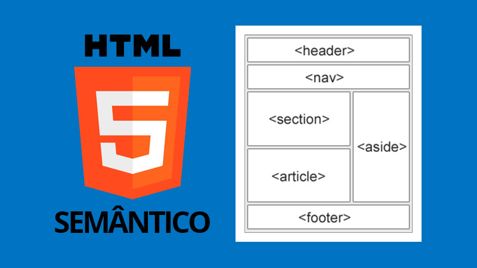

Benefícios do HTML Semântico
Usar HTML semântico traz várias vantagens:
- Melhora o SEO, pois os motores de busca entendem melhor o conteúdo.
- Facilita a manutenção e a leitura do código.
- Ajuda na acessibilidade para usuários de leitores de tela.
HTML semântico utiliza elementos que claramente descrevem o conteúdo que carregam, melhorando a legibilidade e acessibilidade
Usar HTML semântico traz várias vantagens:

O HTML semântico ajuda a organizar melhor o conteúdo e melhora a performance em alguns casos, pois os navegadores entendem melhor a estrutura da página.